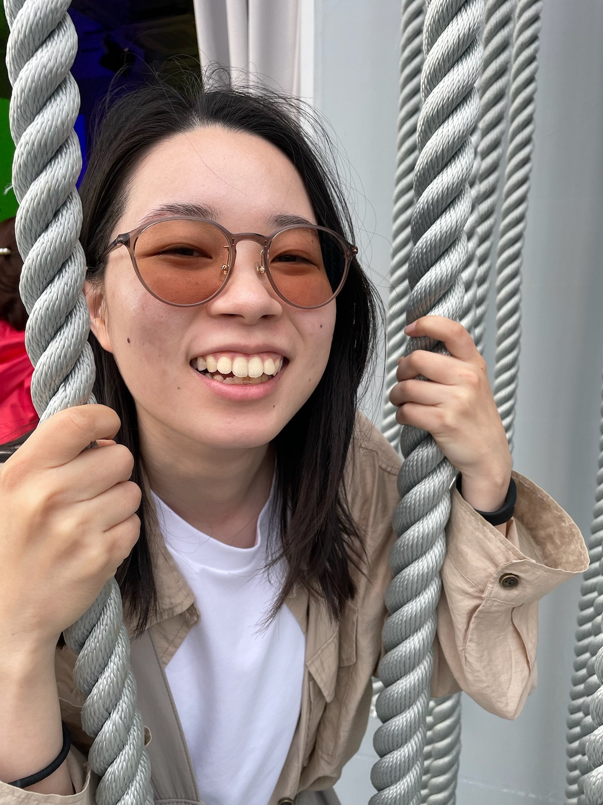

デジタルツインを活用した
人流混雑緩和
デジタルツインを活用して現実空間の人流を再現・分析し、混雑状況の把握と緩和に取り組んでいます。 人流データから移動行動や混雑の発生状況を分析し、情報提示やナッジによる行動誘導を通じた 混雑緩和手法を検討しています。
キーワード デジタルツイン、人流解析、混雑緩和、行動誘導

山下 彩華 / Yamashita Ayaka
奈良先端科学技術大学院大学 先端科学技術研究科
先端科学技術専攻 修士1年
ユビキタスコンピューティングシステム研究室
学部時代に研究へ取り組む中で、情報技術を用いて人の行動変容を支援することに関心を持ちました。 その関心をさらに深めるため、2026年3月に高知工科大学 情報学群 情報通信専攻を卒業後、 奈良先端科学技術大学院大学ユビキタスコンピューティングシステム研究室へ進学しました。 現在は、駅の混雑緩和を目指し、利用者の行動変容を促す手法について研究しています。
デジタルツインを活用して現実空間の人流を再現・分析し、混雑状況の把握と緩和に取り組んでいます。 人流データから移動行動や混雑の発生状況を分析し、情報提示やナッジによる行動誘導を通じた 混雑緩和手法を検討しています。
キーワード デジタルツイン、人流解析、混雑緩和、行動誘導
OUTPUTS
山下彩華、庭本眞太郎、松井智一、諏訪博彦、安本慶一
2026年度情報処理学会関西支部大会
デスクワーク中の身体動作とマインドワンダリングの関係性の分析
山下彩華、敷田幹文
第127回CN・第45回CDS・第42回DCC合同研究発表会
山下彩華、敷田幹文
第126回CN・第59回SPT合同研究発表会
リモートワーク中のコミュニケーションを支援するアプリを開発。 イベントカメラで人の動きを検知し、作業状況をキャラクターで可視化することで、 相手に話しかけるタイミングが分かりにくいという課題の解決を目指した。 技育CAMPハッカソン Vol.4 サポーターズ賞を受賞。
動物好きな人とペットの飼い主が交流できるSNSアプリを、 7人チームで約6か月間開発。 要件定義から設計・実装・テストまで一貫して取り組み、 主にバックエンドの開発を担当。
研究活動や研究室運営における定型業務の効率化を目的に、 Google Apps Scriptを用いた自動化ツールを開発。 Googleフォーム、スプレッドシートからのスライド自動生成や、 ゼミのグループ分け・Slack通知の自動化を実装。
LINEヤフー株式会社
データエンジニアの業務を体験
株式会社マネーフォワード
フルスタックの会計システム開発を体験